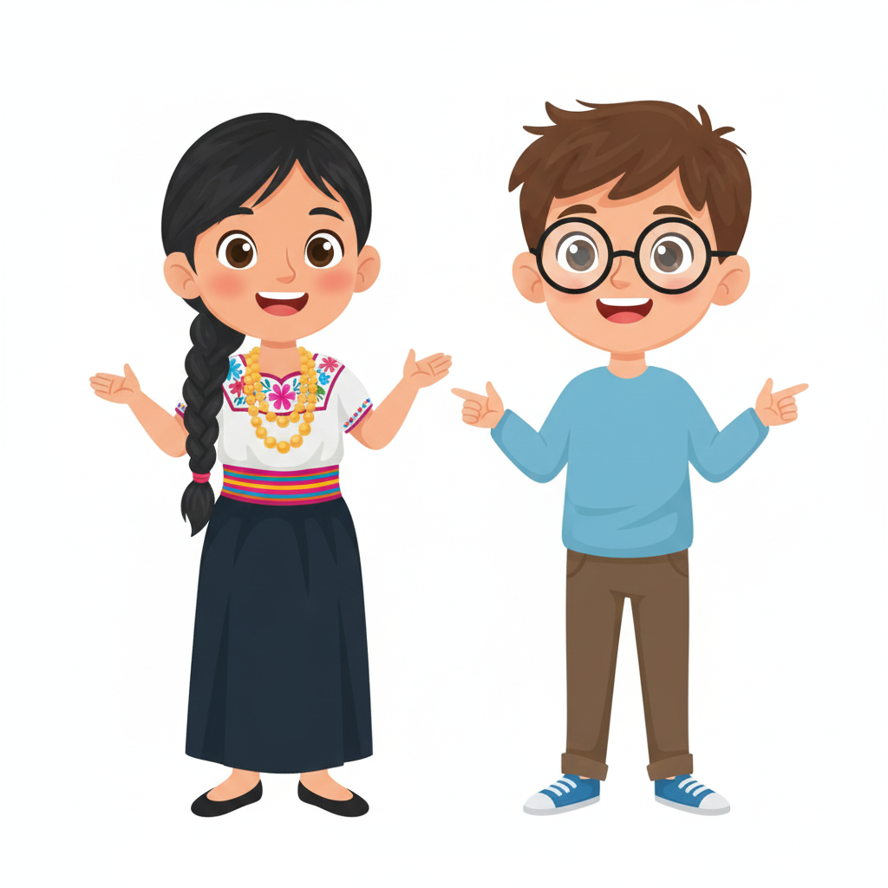
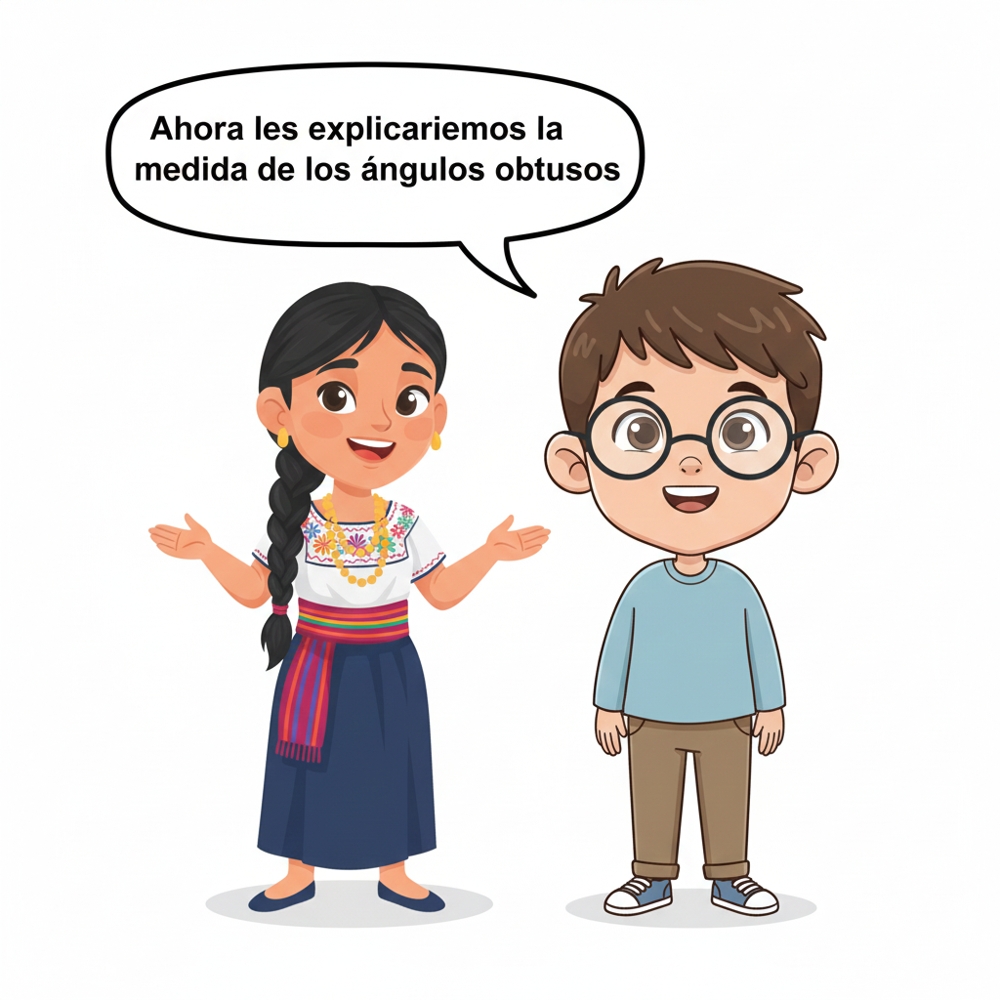
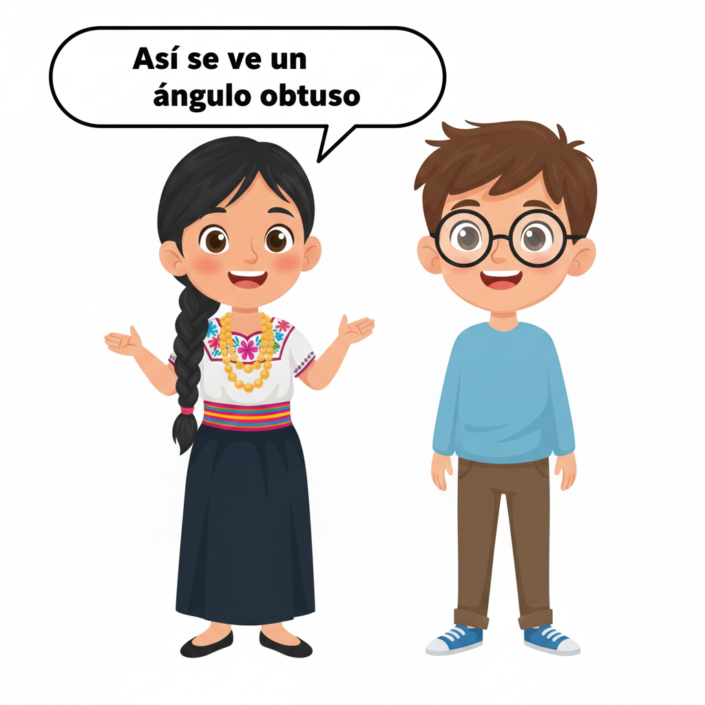

Texto
|  |
Ángulos Obtusos
|
Texto
|  |
¿Cuánto miden los ángulos obtusos? Los ángulos obtusos son aquellos que se abren más que un ángulo recto, pero menos que un ángulo llano. Es decir, son ángulos amplios, con una abertura grande, pero que no llegan a formar una línea recta. Por ejemplo, el ángulo que forman las agujas de un reloj cuando marcan las 10:10 es un ángulo obtuso. |
 |
 |
TriviExt
Lanza el dado y contesta a la pregunta hasta completar todos los quesos.
Lanza el dado y contesta a la pregunta hasta completar todos los quesos.
","instructions":"Lanza el dado y contesta a la pregunta hasta completar todos los quesos. ","showMinimize":false,"optionsRamdon":true,"answersRamdon":true,"showSolution":true,"timeShowSolution":3,"useLives":false,"numberLives":3,"itinerary":{"showClue":false,"clueGame":"","percentageClue":100,"showCodeAccess":false,"codeAccess":"","messageCodeAccess":""},"numeroTemas":2,"nombresTemas":["Ángulos","Tema 2","Tema 3","Tema 4","Tema 5","Tema 6"],"temas":[[{"a":"","b":0,"c":0,"d":0,"f":0,"g":35,"h":"","i":1,"j":1,"m":0,"n":4,"o":["Un ángulo de 45°","Un ángulo de 120°","Un ángulo de 90°","Un ángulo de 30°"],"p":1,"q":"Observa la imagen y selecciona cuál de los siguientes ángulos es un ángulo obtuso.","r":"","s":"ODJD","t":"","u":"../content/resources/20251121214200184GS7//Gemini_Generated_Image_1lfjzz1lfjzz1lfj.png","x":0,"y":0,"z":0,"ad":""}],[{"a":"","b":0,"c":0,"d":0,"f":0,"g":35,"h":"","i":1,"j":1,"m":0,"n":4,"o":["120°","179°","95°","85°"],"p":1,"q":"¿Cuál de los siguientes NO es un ángulo obtuso?","r":"","s":"NDdD","t":"","u":"../content/resources/20251121214200184GS7//Gemini_Generated_Image_1lfjzz1lfjzz1lfj.png","x":0,"y":0,"z":0,"ad":""}]],"isScorm":0,"textButtonScorm":"Guardar la puntuación","repeatActivity":true,"weighted":100,"title":"","customScore":false,"textAfter":"","msgs":{"msgStartGame":"Pulse aquí para empezar","msgSubmit":"Enviar","msgEnterCode":"Introduzca el código de acceso","msgErrorCode":"El código de acceso no es correcto","msgGameOver":"¡Fin de la partida!","msgClue":"¡Genial! La pista es:","msgNewGame":"Pulse aquí para empezar otra partida","msgCodeAccess":"Código de acceso","msgPlayStart":"Pulse aquí para jugar","msgMinimize":"Minimizar","msgMaximize":"Maximizar","msgTime":"Tiempo por pregunta","msgFullScreen":"Pantalla Completa","msgExitFullScreen":"Salir del modo pantalla completa","msgNoImage":"Pregunta sin imágenes","msgSuccesses":"¡Correcto! | ¡Excelente! | ¡Genial! | ¡Muy bien! | ¡Perfecto!","msgFailures":"¡No era eso! | ¡Incorrecto! | ¡No es correcto! | ¡Lo sentimos! | ¡Error!","msgNotNetwork":"A este juego solo se puede jugar con conexión a internet.","msgQuestion":"Pregunta","msgAnswer":"Comprobar","msgInformation":"Información","msgAuthor":"Autoría","msgActityComply":"Ya ha realizado esta actividad.","msgPlaySeveralTimes":"Puede realizar esta actividad cuantas veces quiera","msgYouLastScore":"La última puntuación guardada es","msgOption":"Opción","msgImage":"Imagen","msgOrders":"Ordena todas las respuestas","msgIndicateWord":"Proporcione una palabra o expresión","msgGameStarted":"El juego ya ha comenzado.","msgPlayersName":"Debes indicar un nombre para todos los jugadores seleccionados.","msgReboot":"¿Deseas reiniciar el juego?","msgRoolDice":"lanza el dado.","msgsWinner":"El juego ha terminado. El ganador es %1. ¿Deseas volver a jugar?","msgWinGame":"¡Genial! Ganas la partida.","msgsYouPlay":"tú juegas. Lanza el dado.","msgSaveDiceAuto":"Su puntuación se guardará automáticamente tras cada tirada.","msgSaveAuto":"Su puntuación se guardará automáticamente después de cada pregunta.","msgOnlyFirstGame":"Solo puede jugar una vez.","msgGamers":"Jugadores","msgReply":"Responder","msgErrorQuestion":"has fallado.","msgGetQueso":"consigues el queso de","msgRightAnswre":"Un punto más.","msgAudio":"Audio","msgCorrect":"Correcto","msgIncorrect":"Incorrecto","msgUncompletedActivity":"Actividad no completada","msgSuccessfulActivity":"Actividad superada. Puntuación: %s","msgUnsuccessfulActivity":"Actividad no superada. Puntuación: %s","msgNext":"Siguiente","msgTypeGame":"TriviExt","msgRestart":"Reiniciar","msgYouScore":"Su puntuación"},"trivialID":1763779322981,"version":3,"modeBoard":false,"evaluation":false,"evaluationID":"20251110195405RYIGON","id":"20251121214200184GS7"}{kind=link}